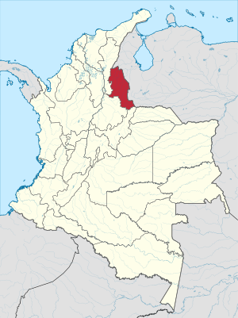
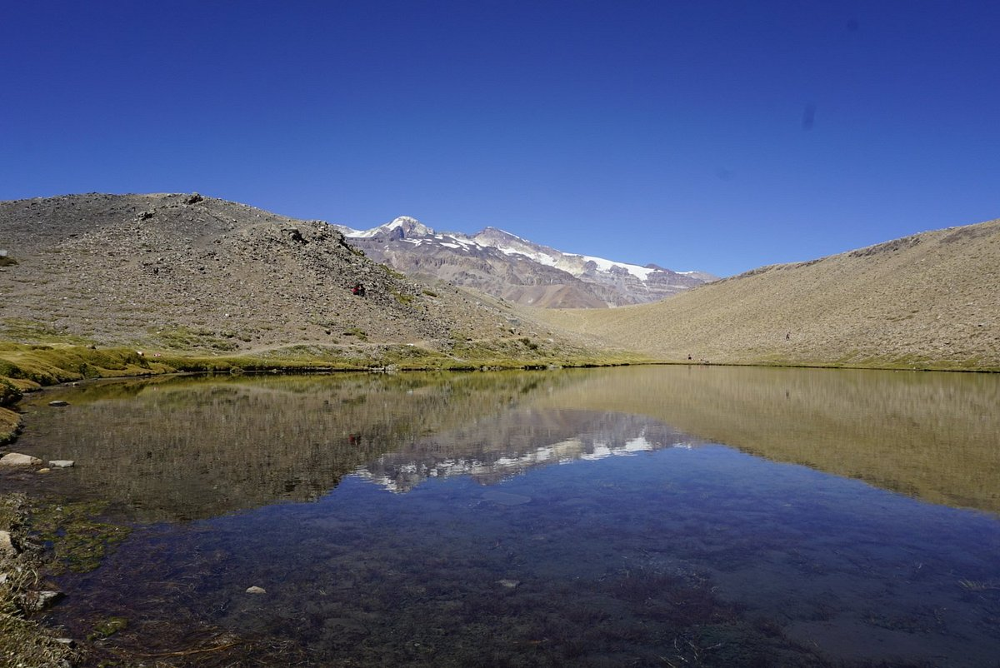
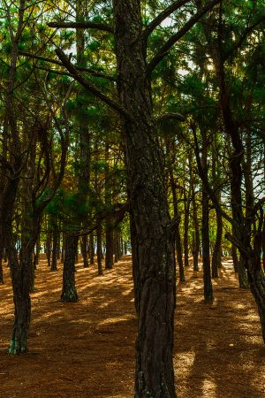
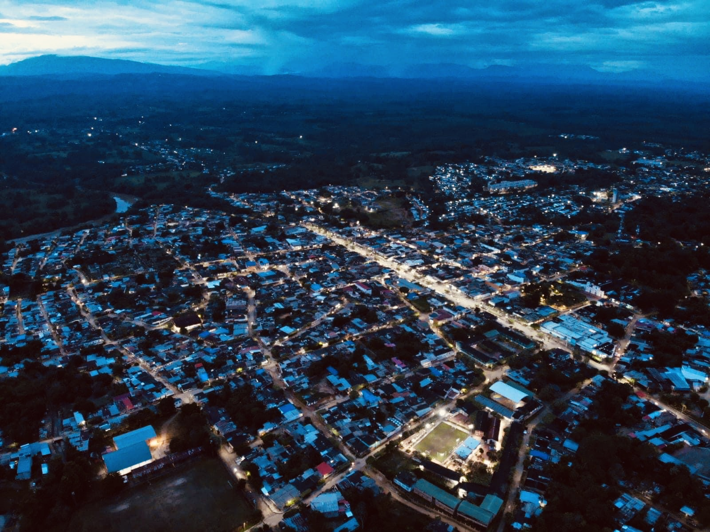
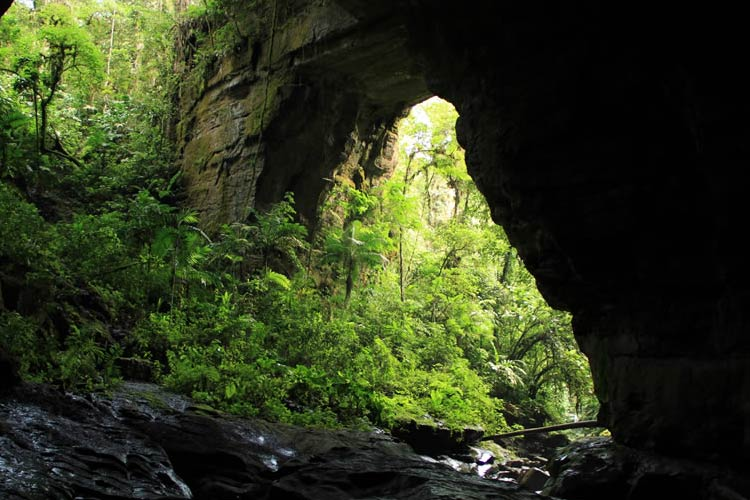
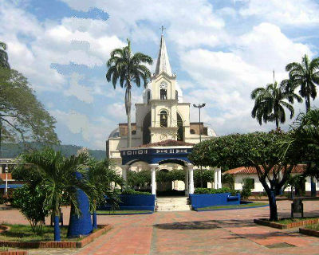
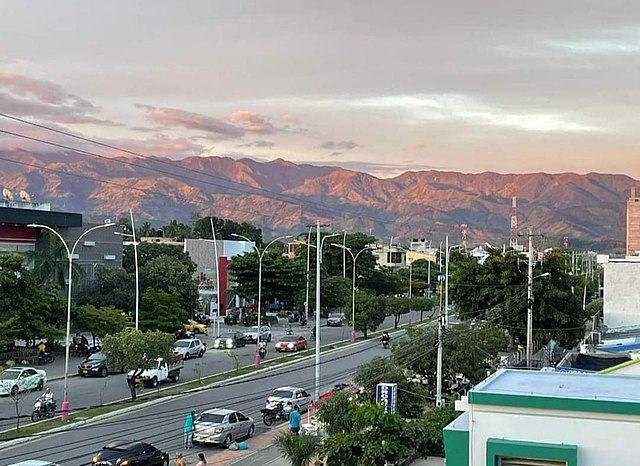
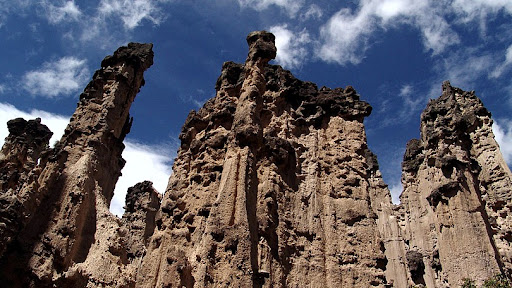

Conoce la belleza de Norte de santander
Lugares mas visitados de nuestro hermoso Departamento
Cúcuta
Es la capital, una ciudad muy moderna y vibrante, que destaca por su Catedra de San José, la Plaza de los Libertadores, el Puente Internacional Simón Bolivar (que conecta con Venezuela) y el Centro Histórico

La Laguna de los Patos
Ubicada en el Parque Natural de los Estoraques, es un hermoso ecosistema de agua dulce rodeado de flora y fauna. Es un lugar ideal para el ecoturismo, caminatas y disfrutar de la naturaleza.
La Pinos
Es un hermoso destino ubicado en las montañas cerca de Cúcuta, en Norte de Santander. Con su clima fresco y paisajes rodeados de bosques de pinos, es el lugar ideal para quienes buscan escapar del bullicio y disfrutar de la tranquilidad de la naturaleza. Perfecto para caminatas, ecoturismo y desconectar del estrés urbano, Los Pinos ofrece una experiencia única de paz y belleza natural.
San Cayetano
Un pueblo pequeño pero pintoresco conocido por sus tradiciones y arquitectura colonial. Se encuentra cerca de Cúcuta y es ideal para quienes buscan una experiencia más tranquila y auténtica.

Tibú
Este municipio está cerca de la Sierra de Perijá y cuenta con una rica biodiversidad. Es un excelente punto para hacer ecoturismo y explorar la naturaleza.
Cueva de los Guácharos
Una de las principales atracciones naturales del departamento, se trata de un sistema de cavernas que es hogar de varias especies de guácharos. La cueva está en el Parque Natural de los Estoraques.
Sardinata
Conocida por su Piedra del Oso, un monumento natural que ofrece una vista impresionante del valle del río Sardinata. Además, es un lugar de interés para los amantes del senderismo.
La Serranía de los Motilones
Este es un lugar de gran importancia ecológica y cultural. La Serranía de los Motilones ofrece paisajes de montaña, bosques tropicales y biodiversidad, además de ser una ruta de importancia histórica.
Puente Internacional Francisco de Paula Santander
Otro puente fronterizo que conecta a Colombia con Venezuela. Este puente es una obra arquitectónica de importancia histórica y simbólica para la región.
Parque Natural de los Estoraques
Un parque que se caracteriza por sus formaciones rocosas, que lo convierten en un lugar impresionante para hacer senderismo y explorar la naturaleza. Además, este parque cuenta con una gran diversidad de flora y fauna.
